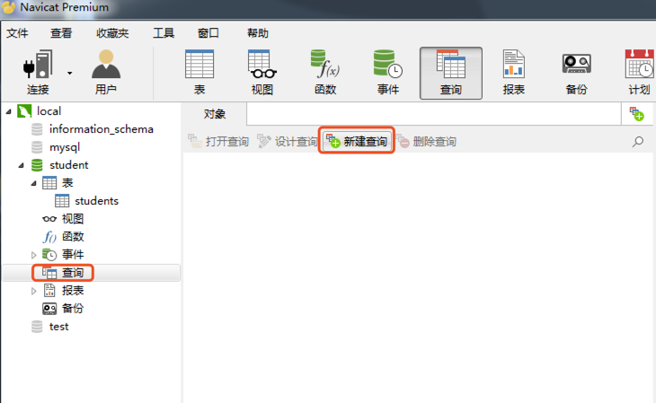
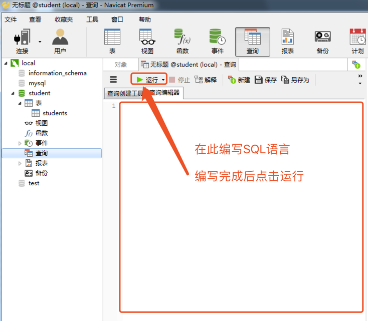

数据库简介
1.
基本概念
1.1.
数据库是什么
1.2.
RDBMS
1.3.
SQL
1.4.
MySQL
2.
MySQL安装与使用
2.1.
Linux平台
2.2.
Windows平台
2.3.
客户端与服务端搭配场景
3.
Navicat使用
3.1.
数据库操作
3.2.
数据表操作
3.3.
数据操作-增删改查
3.4.
数据类型与约束
3.5.
数据库的备份与恢复
4.
SQL语言
4.1.
数据表操作
4.2.
数据操作-增删改查
4.3.
数据操作-查询
4.3.1.
条件
4.3.2.
排序
4.3.3.
聚合函数
4.3.4.
分组
4.3.5.
分页
4.3.6.
连接查询
4.3.7.
自关联
4.3.8.
子查询
4.3.9.
查询演练
5.
高级
5.1.
数据库设计
5.2.
命令行客户端
5.3.
函数
5.4.
存储过程
5.5.
视图
5.6.
事务
5.6.1.
提交
5.6.2.
回滚
5.7.
索引
5.8.
外键
5.9.
用户密码
Published with GitBook
数据库 MySQL
SQL语言
数据表操作：创建、删除
数据操作：增加、删除、修改、简单查询
数据操作：查询
此部分中查询为重点，需要熟练掌握
SQL语言编写和运行
鼠标左键点击某个数据库下面的查询按钮，然后点击新建查询

在打开的查询编辑器中，编写SQL语言，再点击运行
